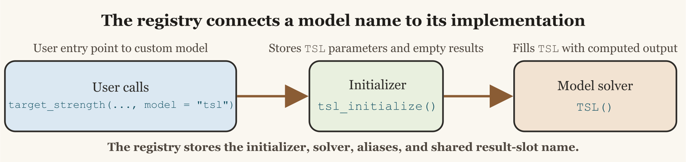

Creating a Model from Scratch
Source:vignettes/creating-models-from-scratch/creating-models-from-scratch.Rmd
creating-models-from-scratch.RmdIntroduction
Building a model from scratch is easiest when the geometry, basis, and approximation regime stay aligned with the canonical scattering literature (Morse and Ingard 1986; Waterman 2009).
One of the most useful features of acousticTS is that a new
target-strength model does not need package-file edits just to be tried.
The package has a runtime model registry, so a user-defined model can be
registered for the current session and then used through the same
target_strength() wrapper as the built-in models. To add a
new model, the minimum requirement is still that two functions exist and
follow the expected naming convention:
- A lower-case initialization function named
*_initialize() - A model function whose name is literally the model name in the form
that
target_strength()will call
For a toy target strength-length model called TSL, that
means defining:
tsl_initialize <- function(...) {
...
}
TSL <- function(object) {
...
}This vignette walks through that pattern and builds a simple example model from scratch. The example is intentionally simple. It is not meant to be a physically complete scattering model. Its purpose is to show how model dispatch, registration, parameter storage, and result storage work inside the package.

How target_strength() finds your model
The important part of target_strength() is that it does
two passes. First, it resolves the requested model in the registry.
Second, it initializes the object and runs the solver for that
registered model. Conceptually, the workflow is:
- The user calls
target_strength(object, frequency, model = "tsl", ...) - acousticTS resolves
"tsl"through the model registry - The registry entry points to an initializer such as
tsl_initialize() - That initializer stores the model parameters and creates an empty
results slot under
$TSL - The registry entry then points to a solver such as
TSL() -
TSL()computes the model output and fills in the stored results table
This is exactly the same pattern used by the existing model files.
The details differ from model to model, but the basic workflow is the
same in R/acoustics.R and in model files such as
R/model-dwba.R.
For a simple model name like "tsl", a minimal
user-defined registration looks like this:
register_model(
name = "tsl",
initialize = tsl_initialize,
solver = TSL,
slot = "TSL"
)The practical consequence is straightforward. If you create
tsl_initialize() and TSL(), register them, and
store their parameters and results under $TSL, the wrapper
can find and run them. The built-in package models are shipped in the
same registry; user models are simply added at run time rather than
hard-coded into the package source.
What the initializer is responsible for
The initializer does not calculate target strength itself. Its job is to:
- Validate the incoming object and any model-specific arguments
- Extract the geometric or material properties the model needs
- Store those quantities in
slot(object, "model_parameters") - Create an empty results table in
slot(object, "model")
This separation is useful because it keeps argument parsing and
object preparation out of the model solver itself. Existing models use
the same pattern. In dwba_initialize(), for example, the
function parses the scatterer, derives contrasts, computes wavenumbers,
and creates empty result storage before DWBA() is ever
called.
A minimal TSL example
Suppose we want a simple empirical target strength-length model. We will define it in the logarithmic domain as:
TS = a + b \log_{10}(L_{mm})
where a is an intercept, b is a slope, and
L_{mm} is body length in millimeters. This is a
deliberately simple example because it shows the package mechanics
cleanly. The model uses length only, so frequency is accepted for
interface consistency but does not alter the prediction.
Step 1: create tsl_initialize()
The initializer below assumes that the target has a shape parameter
called length. It stores frequency, the extracted length,
and the empirical coefficients in the $TSL model-parameter
slot, then creates an empty result table in the $TSL model
slot.
tsl_initialize <- function(object,
frequency,
intercept = -70,
slope = 20) {
shape <- acousticTS::extract(object, "shape_parameters")
if (is.null(shape$length) || is.na(shape$length)) {
stop(
"TSL requires the target shape to have a defined length."
)
}
model_params <- list(
parameters = data.frame(
frequency = frequency
),
body = data.frame(
length_m = shape$length
),
coefficients = data.frame(
intercept = intercept,
slope = slope
)
)
methods::slot(object, "model_parameters")$TSL <- model_params
methods::slot(object, "model")$TSL <- data.frame(
frequency = frequency,
sigma_bs = rep(NA_real_, length(frequency))
)
object
}There are three details here that matter a great deal.
First, the name has to be tsl_initialize, not
TSL_initialize and not initialize_tsl. The
wrapper looks for the lower-case model name with
"_initialize" appended to it.
Second, the stored slot name has to match the model label that the
wrapper will later use, which in this case is $TSL.
Third, the initializer should create the model result table even though it is still empty. That makes the object structure consistent before the model solver runs.
Step 2: create TSL()
The model function itself should be simple. It pulls the prepared
parameters out of $TSL, computes TS, converts
to sigma_bs, and stores the finished results back into the
model slot.
TSL <- function(object) {
model <- acousticTS::extract(object, "model_parameters")$TSL
length_mm <- model$body$length_m * 1e3
intercept <- model$coefficients$intercept
slope <- model$coefficients$slope
TS <- intercept + slope * log10(length_mm)
sigma_bs <- acousticTS::linear(TS)
methods::slot(object, "model")$TSL <- data.frame(
frequency = model$parameters$frequency,
f_bs = rep(sqrt(sigma_bs), nrow(model$parameters)),
sigma_bs = rep(sigma_bs, nrow(model$parameters)),
TS = rep(TS, nrow(model$parameters))
)
object
}This is enough for the solver itself. To make the model callable
through target_strength(), register it:
register_model(
name = "tsl",
initialize = tsl_initialize,
solver = TSL,
slot = "TSL",
aliases = "toy_tsl"
)At that point target_strength(..., model = "tsl") and
target_strength(..., model = "toy_tsl") both resolve to the
same registered model.
The example above repeats the same TS value across all
requested frequencies because this toy model does not use frequency.
That is acceptable for a pedagogical example. A frequency-dependent
model would instead calculate a vector whose length matches the input
frequency vector.
Session registration versus package registration
There are two clean ways to use a new model.
- Session registration: define the functions in the current session or
in another package, then call
register_model(). - Package registration: if you are extending acousticTS itself, add
the model file to the package source and add a built-in registry entry
in
R/models.R.
For a package-style source file, a minimal version would look like this:
#' Target strength-length model (TSL)
#'
#' @description
#' A simple empirical target strength-length relationship.
#'
#' @section Usage:
#' This model is accessed via:
#' \preformatted{
#' target_strength(
#' ...,
#' model = "tsl",
#' intercept,
#' slope
#' )
#' }
#'
#' @name TSL
#' @aliases tsl TSL
NULL
tsl_initialize <- function(object,
frequency,
intercept = -70,
slope = 20) {
...
}
TSL <- function(object) {
...
}That is the same broad organization used by the existing
model-*.R files: roxygen block first, initializer next,
solver function after that. If the model lives in another package, the
usual pattern is to call register_model() from that
package’s .onLoad() hook so the model becomes available
automatically when the extension package is attached.
Calling the new model
Once the functions are defined and registered, the new model can be called through the standard wrapper:
target <- target_strength(
object = target,
frequency = seq(38000, 120000, by = 1000),
model = "tsl",
intercept = -68,
slope = 19.5
)From the user’s perspective, TSL then behaves like any
other model. The results live in the model slot and can be inspected
with:
extract(target, "model")$TSLThe currently available built-in and user-registered models can be listed with:
If the model should survive across sessions without editing the
acousticTS install tree, register_model() also supports
persist = TRUE. Persistent registrations are written to the
user’s R_user_dir() config path, not into the package
library itself, so package updates do not require users to modify
installed package files.
Practical rules to keep in mind
When creating a new model, the following rules are the ones most likely to prevent headaches later.
- The initializer name should usually be lower-case model name plus
_initialize(). - The solver function name should usually match the upper-case slot
label, such as
TSL(). - Both functions must store and retrieve values under the same slot
name, such as
$TSL. - The model must be registered before
target_strength()orsimulate_ts()can resolve it. - The initializer should prepare parameters and an empty result table, not perform the actual model calculation.
- The model function should return the updated object after filling in the result table.
- Any extra arguments the user supplies either through
target_strength(..., model = "tsl", ...)or throughtarget_strength(..., model_args = list(tsl = list(...)))need to appear as formal arguments intsl_initialize().
Where to go next
Once the minimal pattern is working, the next steps are usually:
- Add roxygen documentation for the new model topic.
- Add a theory or implementation vignette if the model is more than a toy example.
- Add tests that check initialization, result-slot structure, and at least one reproducible output case.
- Decide whether the model should report only
TS, or whether it should also providef_bs,sigma_bs, or any model-specific diagnostics.
The key point is that the package architecture is already set up for
this pattern. If you provide a correctly structured initializer and
solver, and register the model in the registry,
target_strength() and simulate_ts() can use it
just like a built-in family.